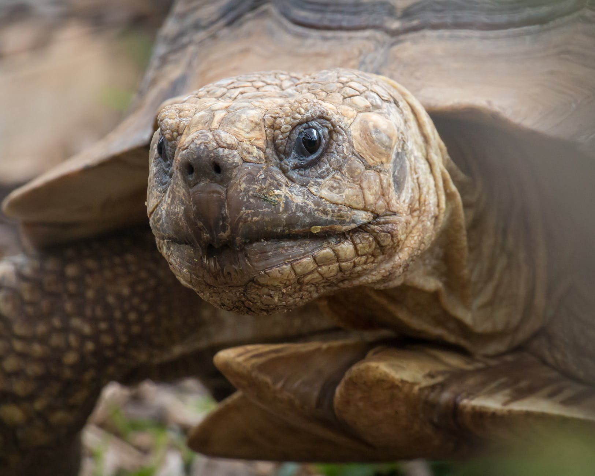

Curiosidades
Sabia que?

Criaturas Solitarias!
Tartarugas são criaturas solitárias. A mamãe tartaruga protege seus filhinhos por pouco tempo. Depois, é cada um por si;
Uma questão de defesa!
Soldados de Roma Antiga se inspiraram nas tartarugas para criar uma espécie de escudo para vários soldados ao mesmo tempo.
Muito tempo dentro de água!
Mesmo que uma tartaruga não seja marinha, ela vai ter a capacidade de segurar a respiração por muito tempo, sabia?
Sentem cócegas na carapaça!
As conchas das tartarugas têm terminações nervosas e, por isso, são sensíveis ao toque. Isso quer dizer que esses animais são capazes de sentir cócegas
Vivem bastante tempo
A tartaruga-de-esporas-africana é uma das maiores, podendo viver por mais de 100 anos e pesar em torno de 90 kg!